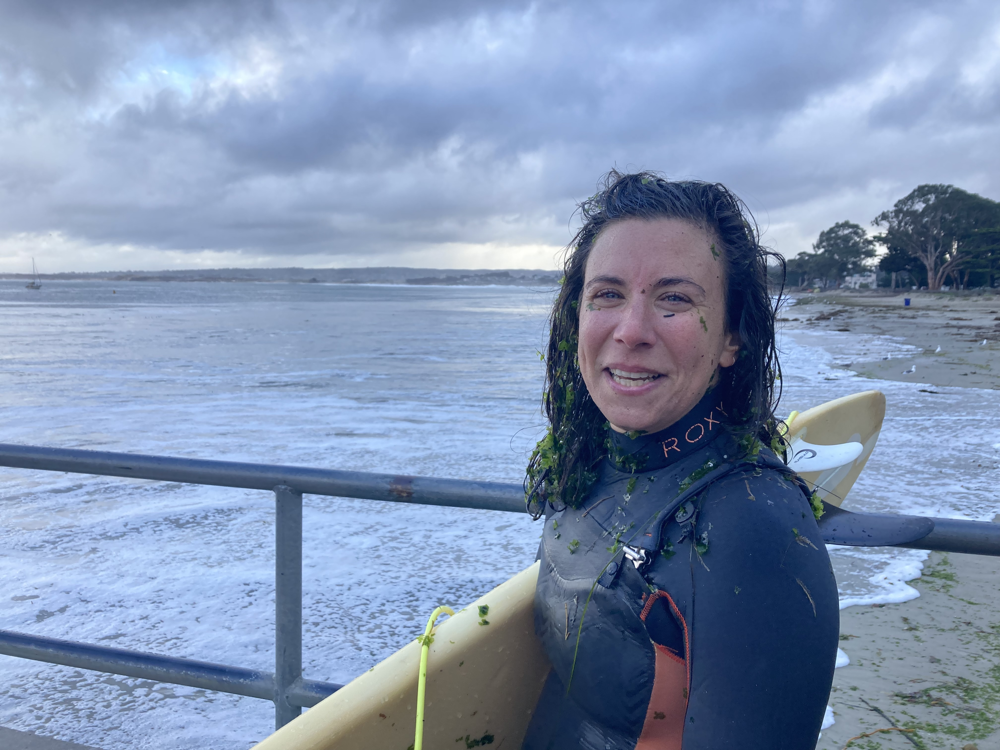

I'm a community science expert, blending research and environmental action into public programs since 2009.
I provide consulting and services for environmental organizations and research institutes with education and outreach programs. Services include:
Conductedclimate action program evaluation with 100 College Corps fellows from Cal Poly SLO who were trained as community organizers to engage residents in climate action with the Resilient Central Coast Campaign.
Created "Community Journal Project Curriculum", which integrates art and science as students learn about local environments and explore ecological connections through writing and illustration
Secured Community science funding with a 3-year, $40,000 Ernest F. Hollings Ocean Awareness Award from the National National Marine Sanctuary Foundation to support statewide program, LiMPETS (long-term monitoring program and experiential training for students)
Are you launching a new program? Need help with funding to keep an existing program afloat? Navigating program evaluation?
Let's dive in! Contact me to explore ways that we can collaborate!
I am an artist, ecologist, and educator. I grew up in Connecticut and earned a Bachelors in Studio Art from Oberlin College and a Masters in Marine Biodiversity and Conservation from Scripps Institution of Oceanography at UC San Diego. I've traveled from California, to Hawaii, to Alaska, working as an environmental educator, and I have been managing community science (aka citizen science) programs since 2013. I spent 2019 researching intertidal ecology and community science in Argentina under a Fulbright grant. When I am not developing programs, I am climbing mountains with my watercolor paints, traipsing around tide pools, and riding ocean waves. I live with my son, husband, and our ridiculous dog in Seaside, California.
